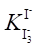
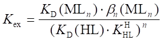
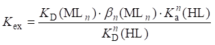
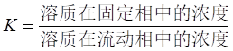

分离方法题目H
1201
用PbS作共沉淀载体,可从海水中富集金。现配制了每升含0.2mg Au3+的溶液10 L, 加入足量的Pb2+,在一定条件下,通入H2S,经处理测得1.7mg Au。此方法的回收率为------( )
(A) 80% (B) 85% (C) 90% (D) 95%
1202
现有Pb2+-Al3+混合液,可将它们分离的沉淀剂是-----------------------------------------( )
(A) 过量NaOH溶液 (B) pH=9的氨缓冲液
(C) 稀H2SO4溶液 (D) pH≈9的(NH4)2S溶液
1203
下面各组混合溶液中,能用pH≈9的氨缓冲液分离的是---------------------------------( )
(A) Ag+- Co2+ (B) Fe3+- Ag+
(C) Cd2+- Ag+ (D) Ag+- Mg2+
1204
下列各组混合溶液中,能用过量NaOH溶液分离的是--------------------------------------( )
(A) Pb2+- Al3+ (B) Pb2+- Co2+
(C) Pb2+- Zn2+ (D) Pb2+- Cr3+
1205
某岩石矿样含Fe、Al、Ca、Mg、Ti、Zn等元素。经碱熔后,用热水浸取,盐酸酸化,用氨水中和至刚出现红棕色沉淀。该红棕色沉淀为_________________。
1206
某矿样含Fe、Al、Mn、Mg、Cu等元素。经Na2O2熔融,热水浸取后,溶液中有_____________________离子;沉淀中有__________________________(写出沉淀的化学式)。
1207
将含Fe、Al、Ca、Mg、Ti、Zn等元素的矿样,经碱熔后, 用水浸取, 再用盐酸酸化,然后,用氨水中和至刚出现棕色沉淀时,加入六次甲基四胺溶液,加热,过滤。这时滤液中含有________________离子;沉淀中有___________________(写出沉淀的化学式)。
1208
下述离子在pH=9的NH4Cl-NH3介质中分别以什么形式存在?
Fe3+、Mg2+、Pb2+、Cu2+
│
沉淀 ↓ NH4Cl+NH3 溶液
┌────────────────┐
│ │
┌─┴─┐ ┌─┴─┐
│ │ │ │
│ │ │ │
└───┘ └───┘
1209
有人用加入足够量的氨水使Zn2+形成锌氨络离子的方法将Zn2+与Fe3+分离; 亦有人宁可在加过量氨水的同时,加入一定量氯化铵。两种方法中以第_____种方法为好,理由是_______________________________________________________。
1210
用NH4Cl-NH3沉淀Fe(OH)3与Ca2+分离时,为使Ca2+共沉淀减少,NH4Cl浓度应当______些,NH3浓度应当_______些。若与Zn2+分离,为使Zn2+共沉淀少,NH4Cl浓度应______,NH3浓度应当________。(指大或小)
1211
在有过量I-时,碘在水溶液中的存在形式主要是I3-,亦有少量I2,而被有机溶剂萃取的是I2,则分配比D可表示成--------------------------------------------------------------------------------( )
[I2]有
(A) D = ─────
[I2]水
[I2]水
(B) D = ─────
[I2]有
[I2]有
(C) D = ───────
[I3-]水+[I2]水
[I3-]水+[I2]水
(D) D = ───────
[I2]有
1212
为使Zn2+生成螯合物被CCl4萃取,下列试剂中适宜的是-----------------------------( )
(A) EDTA (B) 双硫腙 (C) 酒石酸 (D) 三乙醇胺
1213
下列萃取体系中, 分别属于何种萃取体系? (填A,B,C)
(1) 在6 mol/L HCl溶液中, 用乙醚萃取Fe3+______________________
(2) 微量硼在HF介质中与次甲基蓝反应, 用苯萃取__________________
(3) 在pH≈9时, 用8-羟基喹啉-CHCl3萃取Mg2+_____________________
（A） 螯合萃取 （B） 离子缔合萃取 （C）金羊盐萃取
1214
1215
Fe3+在某有机相与水相的分配比是99,今有含10 mg Fe3+的水溶液,若用等体积该有机溶剂萃取2次,则水相中剩余Fe3+的质量是---------------------------------------------------------( )
(A) 0.03mg (B) 0.01mg (C) 0.003mg (D) 0.001mg
1216
在约6mol/L HCl介质中,用乙醚萃取10.0 mg Fe3+,已知分配比为99。经二次等体积萃取后,分出有机相,又用等体积6mol/L HCl洗一次,Fe3+将损失------------------------------( )
(A) 0.001 mg (B) 0.01 mg (C) 0.09 mg (D) 0.1 mg
1217
取FeCl3的盐酸溶液20.0mL,加入10.0mL含HCl的乙醚溶液一起振荡,已知分配比为48,则FeCl3的萃取率为--------------------------------------------------------------------------------( )
(A) 9.6% (B) 9.9% (C) 50% (D) 96%
1218
水溶液中的Ni2+能被丁二酮肟-CHCl3萃取是因为在萃取过程中-------------------( )
(A) Ni2+形成了离子缔合物 (B) 溶液酸度降低了
(C) Ni2+形成的产物的质量增大了 (D) Ni2+形成的产物中引入了疏水基团
1219
现有0.150mol/L的溶质A的水溶液50.0mL, 用与水不相混溶的有机溶剂萃取, 若分配比D为1.5,每次用25.0mL有机溶剂共萃取三次,假设多次萃取时D值和溶液体积均不变,则水相A的浓度为------------( )
(A) 0.00234mol/L (B) 0.0118mol/L (C) 0.0280mol/L (D) 0.0633mol/L
1220
当用与水相等体积的有机相萃取某金属螯合物时,若分配比D=20,则进行一次萃取后,其萃取率(E)等于_____________________________。
1221
100mL水溶液中含有溶质A, 用20mL 有机溶剂可萃取90%的A, 则此溶质的分配比D为__________________________。
1222
指出下列萃取过程中萃取体系的类型(填A,B,C,D)
(1) 用苯从含甲基紫的HCl溶液中萃取Tl3+ ___________
(2) 用CHCl3从pH≈9的氨性溶液中萃取DDTC-Cu ___________
(3) 用磷酸三丁酯(TBP)萃取FeCl3 ___________
(4) 用CCl4萃取I2 ___________
（A） 无机共价化合物萃取体系 （B） 溶剂化合物萃取体系
（C） 螯合物萃取体系 （D） 离子缔合物萃取体系
1223
三氯化铁的盐酸溶液,用2倍体积的含HCl乙醚振摇,已知铁有99%被萃取,则该化合物在有机相和水相的分配比为________________。
1224
某萃取体系,用等体积有机相萃取时,萃取率为95%,则分配比为___________, 若在同样条件下,萃取两次,则总萃取率为______________%。
1225
指出下列术语的意义(填A,B,C,D)
(1) 分配比 ____________ (2) 分配系数 _______________
(3) 萃取率 ____________ (4) 比移值 _______________
[A]有 c有
(A) KD = ──── (B) D = ────
[A]水 c水
a D
(C) Rf = ─── (D) E = ────────×100%
b V水
D + ─────
V有
1226
分光光度法测定钢铁中微量铝,要消除大量铁的干扰,宜用________________分离法。在SO42-、Fe3+、Al3+混合液中,用BaSO4重量法测定SO42-含量,要消除 Fe3+、Al3+的干扰宜用___________________分离法。
1227
已知某溶质A从水中被萃取到乙醚的分配比D为10.0, 若含1.00g溶质A 的水溶液100mL,用等体积的乙醚振摇, A被萃入乙醚层的萃取率为________________; 倘若该水相改用乙醚50mL萃取二次, 则A的萃取率是_______________。
1228
0.100mol/L某弱酸HA溶液100mL,用25.0mL乙醚萃取后,25.0mL水相中的剩余HA需要20.0 mL 0.05 mol/L NaOH才能中和。则 HA 在有机相和水相的分配比D为_____________。
1229
弱酸HA在水相和有机相中的分配系数KD=31,HA在水中的解离常数Ka=2×10-3, (假定A-不被萃取), 如果50mL水相用每份 5.0mL 有机相连续萃取三次。试问:在(1)pH=1.0和(2)pH=5.0时的萃取率各为多少?
1230
碘在某有机溶剂和水之间的分配比D为8.00,如果50.0mL 0.100mol/L I2水溶液用100mL该有机溶剂振摇,问平衡后与10.0mL有机相中I2完全反应需要0.0600 mol/L Na2S2O3溶液多少毫升? [Ar(I)=127.0]
1231
50mL 0.1000 mol/L I2水溶液,用100 mL有机溶剂萃取,一次萃取率为95%, (1)计算分配比D; (2)达平衡时10 mL有机相含碘多少毫摩尔?
1232
已知碘在水与有机溶剂的分配比(D)为8.0,如果取60.0mL浓度为0.100mol/L的碘溶液与100mL有机溶剂振荡,待平衡后取10mL有机相用0.0600 mol/L Na2S2O3 溶液滴定,计算Na2S2O3的体积。
1233
移取0.100mol/L碘液(含过量KI)50.0mL,加CCl450.0mL,摇荡达平衡后,静置分层,取出CCl4溶液10.0mL,用0.1000mol/L Na2S2O3溶液滴定至终点,消耗17.9 mL。计算碘在CCl4相与水相中的分配比。
1234
用氯仿萃取某50mL水溶液中的OsO4,欲使其回收率达99.8%,试问(1)每次用5 mL氯仿萃取,需萃取几次?(2)每次用10mL氯仿萃取又如何? (已知分配比D = 19.1)
1235
18℃时,碘在CS2和水中的分配比 D 为 420。(a) 如果100mL水溶液中含有0.018g I2,以100mLCS2萃取时,将有多少克碘留于水溶液中?(b)如果用 100 mL CS2分两次萃取,留于水中的碘是多少?
1236
采用钽试剂萃取光度法测定钒,100mL试液中含钒40mg,用10mL钽试剂-氯仿溶液萃取,萃取率为90%,用1cm比色皿,在530nm波长处测得萃取液的吸光度为0.384,求分配比和摩尔吸光系数。 [Ar(V)=50.94]
1237
现有0.1000mol/L某有机一元弱酸(HA)100mL,用25.00mL苯萃取后,取水相 25.00mL,用0.02000mol/L NaOH溶液滴定至终点,消耗20.00mL。计算该一元弱酸在两相中的分配系数KD。
1238
以下离子交换树脂属阳离子交换树脂的是-------------------------------------------------( )
(A) R―NH3OH (B) RNH2CH3OH
(C) ROH (D) R―N(CH3)3OH
1239
含H+、Na+、K+、Rb+的混合溶液,根据水化规律的离子交换平衡原理,它们对强酸性阳离子树脂亲和力最大的是------------------------------------------------------------------------------( )
(A) Rb+ (B) Na+ (C) K+ (D) H+
1240
H+与下面各种类型的树脂,最容易起交换作用的是--------------------------------------( )
(A) RCOONa (B) RSO3Na
(C) RONa (D) R==NH2+ Cl-
1241
离子交换树脂的交联度大小是指------------------------------------------------------------( )
(A) 聚苯乙烯含量大小 (B) 二乙烯苯含量大小
(C) 磺酸基团多少 (D) 羧基基团多少
1242
用酸碱滴定法测定某硼酸试样的纯度,欲以离子交换法除去对滴定有干扰的重金属离子,应选用何种离子交换树脂---------------------------------------------------------------------------( )
(A) ―COOH型 (B) ―NH2型
(C) ―N(CH3)3+型 (D) ―SO3H型
1243
100mL仅含Ca2+的未知液,通过氢型阳离子交换树脂交换柱,流出液以甲基红为指示剂,用0.1000mol/L NaOH溶液滴定,耗去20.00mL,则此未知液每毫升中含Ca2+[Ar(Ca)= 40.08]----------------------------------------------------------------------------------------------------( )
(A) 1.603 mg (B) 0.8016 mg (C) 0.4008 mg (D) 4.008 mg
1244
称取某OH-型阴离子交换树脂2.00 g置于锥形瓶中,加入0.200 mol/L HCl 100 mL浸泡一昼夜。用移液管吸取25.00 mL 上层清液,以甲基红为指示剂,用 0.1000 mol/L NaOH溶液滴定,耗用20.00 mL,则树脂的交换容量为--------------------------------------------------------( )
(A) 8.00 (B) 6.00 (C) 4.00 (D) 0.600
1245
实验室中,离子交换树脂常用于---------------------------------------------------------------( )
(A) 净化水 (B) 鉴定阳离子 (C) 作显色剂 (D) 作萃取剂
1246
用纸色谱法分离Fe3+、Cu2+、Co2+,以丙酮-正丁醇-浓HCl为展开剂。若展开剂的前沿与原点的距离为13cm, 而Co2+斑点中心与原点的距离为5.2cm,则Co2+的比移值(Rf)为----------------------------------------( )
(A) 0.63 (B) 0.54 (C) 0.40 (D) 0.36
1247
由图所示，下列距离之比称作比移值Rf的为-------------------------------------------( )
AC AB
(A) ─── (B) ───
AB AC
AB BC
(C) ─── (D) ───
BC AB
・C ・B ・A
溶剂前沿
斑点
原点
1248
用纸色谱法分离物质A和B时,已知A组分的比移值Rf(A)=0.45, B组分的比移值Rf(B)=0.63。欲使分离后,A、B两组分的斑点中心之间的距离为2.0cm,那么色层用的滤纸条的长度(cm)至少应为---------------------------------------------------------------------------------( )
(A) 9 (B) 10 (C) 11 (D) 15
1249
设有一A-B两组分混合溶液,已知Rf(A)=0.40, Rf(B)=0.60。 如果色谱用的滤纸条长度为20cm,则A-B组分斑点中心相距最大距离(cm)可达------------------------------------------( )
(A) 2.0 (B) 3.0 (C) 4.0 (D) 5.0
1250 含有0.1250 g I2的KI溶液25mL,每次用25mL CCl4与之一起振荡。设I2在CCl4和KI溶液之间的分配达到平衡后,在水相中测得0.005000 g I2,则萃取二次的萃取率是------( )
(A) 86.0% (B) 96.0%
(C) 99.0% (D) 99.8%
1251
不同离子交换剂中下列基团的性质是 (填A、B、C、D)
(1) ―CO2H ________ （A） 强酸性
(2) ―N+ (CH3)3 ________ （B） 强碱性
(3) ―SO3H ________ （C） 弱酸性
(4) ―NHCH3 ________ （D） 弱碱性
1252
有一含Ca2+、Fe3+、K+和Li+均为0.2mol/L的0.01mol/L HNO3溶液,使其通过强酸型阳离子交换树脂,然后以0.2mol/L HNO3淋洗。推断洗脱液中出峰由前到后的顺序是___________________________。(忽略NO3-对金属离子的络合作用)
1253
弱酸型阳离子交换树脂不适用于________性溶液中阳离子的交换。将K+、Cs+、Rb+ 溶液通过强酸型阳离子交换树脂后,用稀HCl洗脱,它们洗出的顺序是________________ __________________________________。
1254
下表表示离子交换法制备纯水的原理。试指出各种试验的现象和结论。
|
|
原水 |
原水通过阳 离子交换树脂 |
原水通过阴 离子交换树脂 |
原水依次通过阳、 阴离子交换树脂 |
|
EBT试验 (pH=10) |
|
|
|
|
|
AgNO3试验 |
|
|
|
|
|
pH试验 |
|
|
|
|
|
结论 |
|
|
|
|
(EBT试验和AgNO3试验若呈阳性,以“+”表示,呈阴性以“-”表示)
1255
采用离子交换-酸碱滴定法测定NaAc・3H2O纯度。应采用________型阳离子交换树脂,将试液流经树脂柱,流出液是_____________,用____________标准溶液作滴定剂,选___________为指示剂。
1256
强酸性阳离子交换树脂的活性基团是________________________,
弱酸性阳离子交换树脂的活性基团是________________________,
强碱性阴离子交换树脂的活性基团是________________________,
弱碱性阴离子交换树脂的活性基团是________________________。
(各举一种)
1257
纸色谱法分离混合离子,若混合离子极性大小顺序为A>B>C,用弱极性有机溶剂展开后其Rf值大小顺序为________________________。
1258
将Na2HPO4、NaH2PO4和H3PO4各1 mmol溶于10mL水中,将溶液加入-Na型阳离子交换柱(溶液中呈酸性的H+和其它阳离子从柱中交换出Na+)。再加入100mL水通过柱,并收集在一烧杯中。
(1) 烧杯中Na+浓度是多少?
(2) 溶液的pH是多少? (H3PO4的pKa1~pKa3分别是2.12、7.20、12.36)
3201
将pH=9的NH3-NH4Cl缓冲溶液加入到含有Fe3+、Cu2+、Zn2+、Al3+、Mg2+的溶液中，生成的沉淀是( )
(A) Cu(OH)2，Zn(OH)2，Fe(OH)3 (B) Fe(OH)3，Mg(OH)2
(C) Fe(OH)3，Al(OH)3 (D) Mg(OH)2，Al(OH)3
3202
某矿样含Fe、Al、Mn、Mg、Cu等元素。经Na2O2熔融热水浸取后，溶液中有的离子是------------------( )
(A) AlO2-，Mg2+ (B) Mn2+，Al3+ (C) AlO2-，MnO42- (D) AlO2-，MnO4-
3203
溶液中含Mn2+、Mg2+、Fe3+、Al3+, 加入Na2O2后沉淀的组成是-------------------( )
(A) Al(OH)3，Fe(OH)3，MnO(OH)2 (B) MnO(OH)2，Fe(OH)3
(C) Al(OH)3，Fe(OH)3，Mg(OH)2 (D) Fe(OH)3，Mg(OH)2，MnO(OH)2
3204
为使Al3+与Cr3+分离，可使用--------------------------------------------------------------( )
(A) NaOH (B) Na2O2 (C) NH3+H2O2 (D) NH3-NH4Cl
3205
为使Fe3+、Al3+与Ca2+、Mg2+分离，应选用---------------------------------------------( )
(A) NaOH (B) NH3-NH4Cl (C) Na2O2 (D) (NH4)2CO3
3206
用NH4Cl-NH3沉淀Fe3+，使它与Cu2+分离，为分离完全，应使-------------------( )
(A) NH4Cl浓度大一些，NH3浓度小一些 (B) NH4Cl浓度小一些，NH3浓度大一些
(C) NH4Cl、NH3浓度均大一些 (D) NH4Cl、NH3浓度均小一些
3207
用NH4Cl-NH3沉淀Fe3+，使它与Mg2+分离，为分离完全，应使-------------------( )
(A) NH4Cl浓度小一些，NH3浓度大一些 (B) NH4Cl浓度大一些，NH3浓度小一些
(C) NH4Cl、NH3浓度均大一些 (D) NH4Cl、NH3浓度均小一些
3208
含有Ca、Mg的试样溶解后，加不含CO32-的NaOH使溶液的pH为13，则___________生成__________________沉淀使两者得到分离。
3209
含Mn、Cr 的试样，用Na2O2熔融，用热水浸取，沉淀为__________，溶液中是__________。
3210
向含有PbSO4和BaSO4的试样中加入NaOH，沉淀是________，溶液中是________。
3211
欲使Pb2+、Zn2+分离,应选用-------------------------------------------------------------------( )
(A) HCl (B) (NH4)2S (C) NaOH (D) NH3
3212
欲将BaSO4与PbSO4分离，宜选用---------------------------------------------------------( )
(A) HCl (B) HAc (C) NaOH (D) NH3
3213
利用共沉淀法分离，对于微量组分的测定有何意义？与无机共沉淀剂相比较，有机共沉淀剂有何优点？
3214
分析岩石中的Fe3+、Al3+、Ca2+、Mg2+、Mn2+等组分，为将Fe3+、Al3+与Ca2+、Mg2+分离，常使用NH3-NH4Cl体系，这时Mn将留在何处？若以EDTA 滴定法测定Al3+、Fe3+以及Ca2+、Mg2+，让Mn留在沉淀中还是溶液中为好？如何才能达到此目的？
3215
100mL的某Br2水溶液与50mL的CCl4一起振荡后,测得Br2萃取率为93.5%，则Br2在四氯化碳与水中的分配比D =________。
3216
含Fe3+的HCl溶液，用3倍体积的含HCl乙醚溶液萃取，已知Fe3+有99%被萃取， 则分配比约为-----------------------------------------------------------------------------------------------( )
(A) 3.3 (B) 33 (C) 300 (D) 30
3217
某弱酸HA的解离常数为Ka=1.0×10-5,在pH=5.0时，将其与某有机溶剂一起振荡达平衡后测得分配比为10，若A-不被萃取则HA的分配系数KD=______。
3218
在某萃取体系中，有机酸的分配系数为KD,它在水中的解离常数为Ka，设有机酸根离子不被萃取,相比为1,则在pH________时，有机酸的萃取率
KD
可近似用E = ━━━━━━×100%计算。
KD+Vw/Vo
3219
在6mol/L HCl溶液中，用乙醚萃取Fe3+的原理是：部分乙醚发生质子化作用生成_________，然后与________缔合，被萃入有机相中。这里乙醚既是______ 又是________。
3220
用10mL萃取剂溶液2份对50mL被萃取物的水溶液连续萃取两次，总萃取率为95%， 则分配比D =________。
3221
某有机弱碱A-的pKb=5.0，在pH=9.3时将其水溶液与等体积的有机溶剂一起振荡，其共轭酸HA的萃取率达95%，则HA在两相中的分配系数KD=______。
3222
在某萃取体系，分配比为5.0，若用5份10mL萃取剂溶液萃取100mL 被萃取物质的水溶液5次，总萃取率E =_______。
3223
乙酰丙酮在苯与水两相体系中的KD=5.9，在水中的pKa=8.9。若乙酰丙酮离子不溶于苯,当乙酰丙酮的苯溶液与同体积的pH=8.0的水一起振荡达平衡时，有机相的乙酰丙酮为其总量的_____%。
3224
某有机酸HL在有机相与水相中的分配系数为KD，在水中的解离常数为Ka, 若L-不被有机相萃取则其分配比D与水相中H+浓度的关系为D =__________。 当____________时，D = 0.5KD。
3225
弱酸HA在有机相与水相中的分配系数为10，若A-不被有机相萃取,当pH值为5.0时，酸有50%进入等体积的有机相，则HA的解离常数Ka=_________。
3226
用萃取剂溶液多次萃取的办法可提高萃取率，当水相体积为Vw，有机相体积为Vo时，一次萃取率E =__________；将有机相分成n等份进行n次萃取, 则总萃取率E=________。
3227
用CCl4从含有KI的水溶液中萃取I2，其分配比可表示为_________________ (设I2 在两相中的分配系数为KD，I2可形成I3-，其形成常数为 
3228
某溶质在两相中的分配比是4.0，(1)若水相体积为10mL，有机相体积为多大时，溶质的萃取率才能达到99%？(2)若改用30mL有机相分成三等份萃取三次，总的萃取率有多大？
3229
常温下，I2在CS2和水中的分配系数KD=420。(a)如果50mL水溶液中含有I2 0.009g，以50mL CS2萃取之，将有多少克I2留在水中？(b)如果改用两份25mL的CS2萃取，留在水中的I2又是多少克？
3230
用0.100mol/L NaOH滴定10.0mL某有机弱酸水溶液，计消耗了10.20mL；若将该弱酸水溶液50mL与20mL某有机溶剂振荡后，再取水相10.0mL用上述NaOH滴定，计消耗2.50mL。计算该弱酸在有机相与水相中的分配比？
3231
丁酸在苯-水体系中的分配系数KD=3，当100 mL 0.10 mol/L丁酸溶液用25mL苯萃取时, 计算在(a)pH=4.00；(b)pH=10.00时丁酸在苯中的浓度？ (丁酸根离子不被萃取、丁酸的pKa=4.8)
3232
两种酸HA和HB的KD和Ka分别为：HA的Ka=1.0×10-5，KD =10，HB的Ka=1.0×10-10， KD=1000，若A-和B-均不被萃取,计算pH值分别为6， 7，8，9，10时两酸的分配比。假设HB可定量萃取而HA几乎不被萃取时， 要求它们的D相差106倍，则完成这一分离的最低pH值约为多少？
3233
三氟乙酰丙酮为一弱酸,能被CHCl3萃取,而其酸根离子则不被萃取。从三氟乙酰丙酮在CHCl3和H2O中的分配比的测定实验得如下数据：
pH 1.16 6.39
D 2.00 1.40
计算它在CHCl3和H2O中的分配系数KD和在水中的解离常数Ka。
3234
用与水不相溶的有机溶剂萃取100mL浓度为0.120mol/L的溶质A，若分配比为 2.0，每次用20.0mL有机溶剂萃取，共萃取5次，则水相中A的浓度还有多大？
3235
25℃时Br2在四氯化碳和水中的分配比是29.0，将100mL Br2水溶液与20mL 四氯化碳一起振荡, 分层后,水相以碘量法测定剩余Br2消耗0.1020 mol/L Na2S2O3 标准溶液5.23mL。计算原水溶液中的Br2浓度。
3236
8-羟基喹啉HL在某萃取体系中的分配系数KD=720，H2L+在水中的解离常数Ka1、Ka2分别为1.0×10-5，2.0×10-10。
(1) 导出8-羟基喹啉的分配比与水相中H+浓度的关系式。
(2) pH多大时，8-羟基喹啉的萃取率最大？
(3) 当相比为1时，8-羟基喹啉的最大萃取率有多大？
3237
试导出螯合物萃取反应： M水+nHL有=MLn有+nH+水 的萃取平衡常数Kex[用KD(MLn)，KD(HL)，bn(MLn)，或Ka(HL)表示]。
3238
对螯合萃取反应：M水+nHL有=MLn有+nH+ 其萃取常数
 
试说明等式右边四项常数含义，并简要解释它的对Kex值的影响。
3239
用离子交换树脂柱分离阳离子或阴离子时，下述溶液中可用作洗脱剂的是------( )
(A) HAc (B) NH3 (C) NaOH (D) HCl
3240
在柱色谱中分配系数K定义为____________________，K值越大的物质，流出色谱柱的时间越____。
3241
离子交换树脂的交联度大，树脂的选择性____，交换速度____；而交联度小，则树脂的选择性____，交换速度_____。树脂的交联度一般为______________。
3242
在柱色谱中，使用吸附能力大的吸附剂来分离极性弱的物质时，应选用极性____ 的洗脱剂，极性____的物质先被洗脱出来。
3243
在柱色谱中，使用吸附能力小的吸附剂来分离极性强的物质时，应选用极性____ 的洗脱剂，极性____的物质先被洗脱出来。
3244
带相同电荷的阳离子的水合离子半径越小，与树脂的亲和力就__________，因此Na+、K+，Cs+，Rb+，Li+与阳离子交换树脂的亲和力从小到大顺序是: ________________ ____________________________________。
3245
将Fe3+，Al3+的HCl溶液通过阴离子交换树脂柱，其中____以________ 形式被保留在柱上，可在流出液中测定________。
3246
用离子交换树脂分离物质的实验步骤为(1)__________；(2)__________； (3)__________；(4)__________；(5)__________。
3247
为得到能满足分析化学实验要求的纯水，可将电渗析水通过________型离子交换柱，再通过________型离子交换柱，最后通过_________________型离子交换柱。
3248
为测定溶液中Cr(III)和Cr(VI)的含量，将试液通过阴离子交换树脂，在流出液中测定________；用NaCl作为淋洗液，在洗脱液中测定________。
3249
NaAc不能用酸碱滴定法直接滴定。但将NaAc溶液通过H+型强酸性离子交换树脂柱，可用________作标准溶液滴定淋洗液，选用________作指示剂确定终点。
3250
将NaNO3溶液通过OH-型强碱性离子交换树脂柱后，可用________作标准溶液滴定，可选用________作指示剂确定终点。
3251
将NH4Cl溶液通过OH-型强碱性离子交换树脂柱后，可用________ 作标准溶液滴定淋洗液，选用________作指示剂确定终点。
3252
将Na2SO4溶液通过H+型强酸性离子交换树脂柱后，可用________ 作标准溶液滴定淋洗液，为确定终点可选用________作指示剂。
3253
说明以下几种色谱分析法英文缩写的意义：
GC是__________________，LC是_______________，HPLC是_________________， PC是__________________，TLC是______________。
3254
薄层分离分析的过程为(1)______，(2)______，(3)______，(4)______。
3255
溶液在流动相和固定相之间的分配作用导致物质互相分离，这是色谱法的一般原理。在纸色谱中，固定相是______________；流动相是_________________。
3256
在薄层色谱和纸色谱中，Rf定义为______________,两物质的Rf相差____, 就可能彼此分离。
3257
用纸层析法分离两种性质相近的物质A和B，若已知两者的比移值分别为0.40和 0.60，使用8cm长的层析纸，则分离后两斑点之间的最大距离是多少？
3258
称取干燥的H型阳离子交换树脂1.210g，置于干燥的锥形瓶中，准确加入100mL 0.1020mol/L NaOH标准溶液，摇匀，塞好，放置过夜。吸取25.00mL上层清液， 用0.1102mol/L HCl标准溶液滴定,消耗8.06mL。该树脂的交换容量是多少? (以mmol H+/g计)
3259
混合物试样中仅含有MgCl2和NaCl,称取0.2152g，溶解后使其通过H型阳离子交换柱。流出液用0.1102mol/L NaOH标准溶液滴定，消耗35.25mL。计算混合物中 MgCl2,NaCl 的质量分数？[Mr(MgCl2)=95.21，Mr(NaCl)=58.44]
3260
大量Fe3+存在会对微量Cu2+的测定有干扰，解决此问题的最佳方案是------------( )
(A) 用沉淀法(如NH3-NH4Cl)分离除去Fe3+
(B) 用沉淀法(如KI)分离出Cu2+
(C) 用萃取法(如乙醚)分离除去Fe3+
(D) 用萃取法分离出Cu2+
5201
18℃时，I2在CS2和水中的分配比D为40.0。如果一定体积的水溶液中含I2 0.018 g,用两份等体积的CS2萃取两次，测定水中剩余的I2为4.07×10-5g,则每次萃取时的相比(V水/VCS2)是多大?
5202
以下离子交换树脂能用来交换Ca2+的是-----------------------------------( )
(A) R-NH3OH (B) R-NH2CH3OH (C) R-OH (D) R-N(CH3)3OH
5203
根据离子交换树脂对离子亲和力的大小，判断Ba2+,Sr2+,Ca2+中最先被阳离子交换树脂交换的是 。
5204
Na+与下面几种类型树脂中，最易发生交换作用的是-------------------------( )
(A) RCOOH (B) RSO3H (C) ROH (D) R=NH2Cl
5205
痕量Au3+的溶液在盐酸介质中能被阴离子交换树脂交换而得到富集，这时Au3+是以
形式被交换到树脂上去的。
5206
将含有Cr2O72-和Cr3+的溶液通过磺酸型离子交换剂，则流出液主要含有 离子。
5207
用纸色谱法分离A、B两种物质，在某条件下两物质的比移值Rf分别为0.36、0.40。设A、B两物质斑点的直径分别为0.2 cm,0.4 cm,当展开剂的前沿达到10 cm时，A、B能否完全分离?
5208
阳离子交换树脂对阳离子的亲和力的大小决定于(1) ;(2) 。
5209
用薄层色谱法分离混合离子，若混合离子的极性大小的顺序是A < B < C，用极性有机溶剂作展开剂，其Rf值大小顺序为 。
5210
若物质A在两相中的分配比为17，今有50 mL的水溶液，应用多少毫升的萃取剂溶液进行萃取，才能使物质A有95 % 被萃取到有机相?
5211
若某物质在两相中的分配比为17，今有50 mL的水溶液，应用10 mL的萃取剂溶液连续萃取几次，才能使总萃取率达95 % 以上?
5212
某物质的水溶液100 mL，用5份10 mL萃取剂溶液连续萃取5次，总萃取率为87 % ，则该物质在此萃取体系中的分配比是多少?
5213
用苯萃取等体积的乙酰丙酮的水溶液，萃取率为84 % ，则乙酰丙酮在苯与水两相中的分配比是多少?若使乙酰丙酮的萃取率达97 % 以上，至少用等体积的苯萃取几次?
5214
用2份25mL苯从25mL乙酰丙酮水溶液中萃取两次，已知乙酰丙酮在水溶液中的pKa＝8.9，在两相中的分配系数KD=5.9。则水溶液的酸度为多大时，才能使乙酰丙酮的萃取率达97 % ?
5215
若酸HA在两相中的分配系数KD为10，HA的解离常数Ka= 1.9 ×10－4，若酸根A－ 不被有机相萃取，当用等体积的两相萃取HA时，有50 % 的弱酸进入有机相，这时水溶液的pH值是多少?
5216
弱酸HA在CH3Cl和水中的分配比为8.20，取10.00 mL 0.1025 mol/L的HA水溶液，用10.00 mLCH3Cl萃取后，取5.00 mL水相，用NaOH滴定，消耗2.10 mL,该NaOH溶液的浓度是多少?
5217
水溶液中含有Fe3+和Cr3+，若用沉淀分离法使铁和铬分离，应采取什么方法?
5218
自来水中含有Ca2+、Mg2+和微量Pb2+，难以直接测定Pb2+，向水样中加入Na2CO3，因生成 ，使水中的Pb2+被 ，铅得到富集而便于测定。
5219
使用过的离子交换树脂常用HCl进行再生处理，这时阳离子交换树脂成为 型；阴离子交换树脂成为 型。
5220
大量的Fe3+存在可影响Cu2+的测定。可向溶液中加入 ，调节溶液的pH在4左右，然后通过阴离子交换树脂，铁离子即被树脂交换，Cu2+则不能被交换而流出，可在流出液中测Cu2+。
5221
用阳离子交换树脂柱分离Na+、Mg2+、Al3+,用HCl作洗脱剂，则这些离子被洗脱的先后顺序是 。
5222
已知阴离子交换树脂对以下阴离子亲和力大小顺序为 F-< Ac- < NO3- < SO42-，则用该树脂分离这些离子时，用HCl作洗脱剂，这些离子洗脱的先后顺序是 。
5223
某溶液中含有微量Fe3+和Ca2+、Mg2+，加入足量的HCl后，再通过阴离子交换树脂柱，被保留在树脂上的离子是-------------------------------------------------( )
(A) Ca2+、Mg2+ (B) Fe3+ (C) Ca2+ (D) Mg2+
5224
5225
在色谱法分离过程中，分配系数的定义是

若某物质K值为0，则意味该物质 。
5226
在经典色谱中，常用的吸附剂有 、 、 (举出三种类型) 。
5227
钢铁中微量铝的测定，可用离子交换法消除铁的干扰。请简要说明实验方法。
5228
当萃取率为50 % 且相比为1时, 水溶液的pH称为pH1/2,不考虑金属离子和萃取剂(HL)的副反应，则pH1/2＝ 。[设该萃取体系的萃取平衡常数为Kex, c(HL)有为已知]
5229
某螯合物萃取体系的相比为1，当萃取率为50 % 时水相的pH称为pH1/2。若被萃取金属离子有副反应，萃取剂微溶于水，则pH1/2＝ 。
[设该萃取体系的萃取平衡常数为Kex,萃取剂浓度c(HL)有为已知]
5230
用CCl4从水溶液中萃取I2，在萃取前后分别用碘量法测得水相中I2的浓度为0.5230 mol/L和0.0256 mol/L，则碘的萃取率为 。
5231
某阳离子交换树脂的交换容量为6.020 mmol/g。称取干燥的该阳离子交换树脂(H型)1.010 g,置于干燥的具塞锥形瓶中，准确加入100 mL 0.1050 mol/L NaOH标准溶液，摇匀塞紧后放置过夜，吸取25.00 mL上层清液，用0.1002 mol/L HCl标准溶液滴定，消耗该HCl多少毫升?
5232
为测定某处饮用水中的痕量Cu2+,取该水样1000 mL，让其缓慢通过阳离子交换树脂，然后用HCl洗脱被交换到树脂上的Cu2+。5.0 mL HCl可完全洗脱，则Cu2+的富集倍数为 。
5233
用沉淀剂B能定量沉淀A而使其与溶液中其它组分分离，现取50mL含20 mg A的溶液
加入沉淀剂B后，测定溶液中剩余的A的浓度为20 mg/mL。问该分离方法中 A的分离效率为 。
5234
A、B两种组分用萃取法进行分离后，测定A、B的萃取率分别为95.6％和0.4％，若相比为1，则该方法的分离度b为 。(b=DA/DB)
5235
若要求A、B两物质在萃取分离中的分离度大于100，则要求A的分配比DA至少是B的分配比DB的 倍。
5236
1L含20 mg/mL的Cu2+的水溶液通过阳离子交换树脂，用水淋洗后，改用5.0 mL 6 mol/L的HCl可完全洗脱树脂上的Cu2+。用碘量法测得淋洗液中Cu2+的浓度为0.0502 mol/L，则Cu2+的回收率为 。[Ar(Cu)=63.55]
5237
用薄层色谱法分离苯丙氨酸。将1滴含10.0 mg苯丙氨酸的试样溶液点在色谱板上，展开后得到苯丙氨酸的斑点，取下该斑点的吸附剂，用10.0 mL溶剂溶解，以吸光光度法测得苯丙氨酸的浓度为0.82 mg/mL,苯丙氨酸的回收率为 。
5238
某中等强度的弱酸在两相中的分配比为7.70。移取20.0 mL 0.1000 mol/L该弱酸的水溶液，用10.0 mL有机相萃取后，移取10.0 mL水相，用0.1000 mol/L NaOH滴定，应消耗NaOH标准溶液多少毫升?
5239
在80 mL浓度均为0.125 mol/L Fe3+、Mg2+的混合溶液中，加入20 mL 2.0 mol/L氨水沉淀Fe3+，问在此情况下，镁会不会产生沉淀？为什么？[Ksp(Mg(OH)2)=1.8×10-11, NH3的Kb=1.8×10－5]
5240
用ROH型离子交换树脂交换金属离子，对溶液酸度要求是----------------- -( )
(A)酸性 （B）碱性 (C)中性 （D）酸性、碱性、中性均可
5241
使用R-N+(CH3)3型离子交换树脂交换金属离子，对溶液酸度要求为-------- -- -( )
(A)酸性 （B）中性 (C) 碱性 （D）酸性、碱性、中性均可
5242
用RSO3H型离子交换树脂交换金属离子，对溶液酸度要求为-------------- - -( )
(A)酸性 （B）中性 (C)碱性 （D）酸性、碱性、中性均可
5243
用RCOOH型离子交换树脂交换Na+，对溶液酸度要求是－-------------- --- --( )
(A)碱性 （B）中性 (C)中性或碱性 （D）强酸性
5244
使用R-NH2型离子交换树脂时，溶液酸度应调节为-----�D�D�D�D�D�D�D----- -( )
(A)碱性 （B）中性 (C)酸性 （D）酸性、碱性、中性均可
5245
用CCl4从20.0mL碘的水溶液中萃取碘，采用碘量法测得碘的浓度c(I2)=0.1025 mol/L 。经过一次萃取后，移取10.00 mL水相，用0.1011 mol/L Na2S2O3溶液滴定，消耗2.10mL，则碘的萃取百分率为 。
5246
称取0.2300g NaCl，溶于水，通过强酸性的离子交换树脂，用蒸馏水淋洗树脂，淋洗液用0.1010 mol/L NaOH溶液滴定，消耗38.92 mL，若NaCl中不含其他阳离子，则该NaCl的纯度是多少? [Ar(Na)=22.99 Ar(Cl)=35.45]
5247
称取NaAc×3H2O 0.4598g，溶于水，通过强碱性的阴离子交换树脂，用蒸馏水淋洗树脂，淋洗液用0.1100 mol/L HCl溶液滴定，消耗30.70 mL，若NaAc中不含其他阳离子， 则NaAc×3H2O的纯度是多少? [Mr(NaAc×3H2O)=136.08]
5248
用阳离子交换树脂柱分离Na+、K+、Cs+、Rb+、Li+，用HCl作洗脱剂，这些离子洗脱的先后次序是 。
5249
某试液中含有Cr(III)和Cr(VI)，为分别测定其浓度，将该试液通过阳离子交换树脂柱，可在流出液中测定 ；用HCl作为淋洗液，在洗脱液中测定 。
5250
将含有Na＋、K＋、Ca2＋、Mg2＋的混合溶液通过强酸型离子交换树脂，用酸洗脱的次序是( )
(A) Na＋，K＋，Ca2＋，Mg2＋ (B) Mg2＋，Ca2＋，K＋，Na＋
(C) K＋ ，Na＋， Mg2＋，Ca2＋ (D) Ca2＋，Mg2＋，Na＋，K＋
5251
用纸色谱法分离A、B两种物质，在一定条件下A、B两物质的比移值分别为0.35,0.45，设A、B两物质色谱斑点的直径分别为0.50cm和0.80cm,要求展开剂前沿至少达到多少厘米时，A和B才能完全分离?
5252 某OH型阴离子交换树脂的交换容量为6.00 mmol/g。称取该干树脂1.00g，加入0.200 mol/L HCl 50.00 mL,浸泡一昼夜。用移液管吸取25.00 mL上层清液，以酚酞为指示剂，用0.1000 mol/L NaOH溶液滴定，消耗NaOH多少毫升?
5253
将每毫升含CaCl2 1.603 mg的溶液50.00 mL通过氢型阳离子交换柱，流出液以酚酞为指示剂，用NaOH溶液滴定，消耗10.00 mL，则该NaOH溶液的浓度有多大? [Ar(Ca)=40.08, Ar(Cl)=35.45]
5254
将强酸型离子交换树脂处理成H型，装柱,用水洗至中性。将5.10 mL 0.2340 mol/L的CaCl2溶液加入到该树脂柱中，再用水洗至中性。淋洗液用0.1020 mol/L NaOH滴定，消耗20.50 mL。Ca2+在该树脂上的交换率为 。
5255 将强碱型离子交换树脂处理成OH型，装柱并用水洗至中性。将50.00 mL 0.0102mol/L NaCl溶液加入到该柱中，然后再用0.0500 mol/L HCl溶液滴定所收集的淋洗液，消耗10.00 mL,则Cl-的交换率有多大?
5256
某饮用水中含有痕量Cu2＋，取水样1000 mL,让其通过阳离子交换树脂，然后用5mL HCl完全洗脱，经测定此方法的回收率为98%，此方法的富集倍数是 。
5257 Cu2＋在某有机相和水相中的分配比是80。今有含Cu2＋10 mg的水溶液，用等体积的该有机溶剂萃取3次，则水相中残留Cu2＋为 mg。
5258
向20.0 mL 0.150 mol/L FeCl3的盐酸溶液中加入10.0 mL乙醚，一起振荡。水相中剩余的Fe(III)用络合滴定法测定，耗去0.0200 mol/L EDTA 10.0 mL。问铁的萃取率和分配比分别为多大?
5259
弱酸HA的Ka=2.0×10-3。50mL该弱酸的水溶液(pH=1.0)每次用5.0 mL的有机相连续萃取3次（假定A-不被有机相萃取）,萃取率为98.5 % 。则弱酸HA在有机相和水相中的分配系数KD是多大?
5260
碘在某有机溶剂和水中的分配比为8.0。今有50.0mL 0.100mol/L碘的水溶液，用100mL该有机溶剂一起振荡，平衡后与10.0mL有机相中的I2完全反应需Na2S2O3溶液5.70mL，则该溶液的浓度有多大?
5261
用氯仿萃取50 mL OsO4水溶液中的OsO4，每次用同样体积的氯仿萃取4次，萃取率达99.8%。问每次萃取时所用氯仿的体积为多少毫升?(已知分配比D=19.1)
5262 在Cd2＋、Zn2＋混合试液中通入H2S至饱和，使Cd2＋沉淀完全，Zn2＋不沉淀，以达到分离的目的。问酸度应控制在什么范围?[说明：当母液中[M] £1.0×10-5mol/L时,可认为已沉淀完全；[M]=0.10mol/L,可认为不沉淀。已知：饱和H2S的浓度为0.10mol/L,H2S: Ka1=1.3×10-7,Ka2=7.1×10-15;Ksp(CdS)=8×10－27；Ksp(ZnS)=2×10－22]
5263 移取0.100 mol/L I2溶液(含有一定量KI)50.0mL,用10.0 mL CCl4萃取后，取水相25.00mL，用0.1000mol/L Na2S2O3溶液滴定，用去18.50mL，计算I2在CCl4和水相中的分配比和萃取效率。实验证明此体系的分配比与KI含量有关，KI含量越大，D越小，如果不含KI，当D＝85，问需用多少毫升CCl4，即可得到与上述相同的萃取效率。
5264 称取干燥的H型阳离子交换树脂0.5864g，置于干燥的锥形瓶中，准确加入100.0 mL 0.1204 mol/L的NaOH标准溶液，盖好瓶口，放置过夜。摇匀，移取上层清液25.00 mL，用0.1126 mol/L HCl标准溶液滴定，用去21.46 mL。那么此阳离子交换树脂的交换容量(mmol/g)为：----------------（ ）
（A）8.50 (B) 6.05 (C)4.50 (D)4.05
5265 试液中有两种性质相似的组分A和B，用纸上色谱法进行分离，它们的比移值分别为0.50和0.70，欲使分离后斑点中心的距离为2.4cm,溶剂前沿与纸条顶端的距离为4.0cm,原点与下端的距离为3.0cm，问滤纸条应为多长?